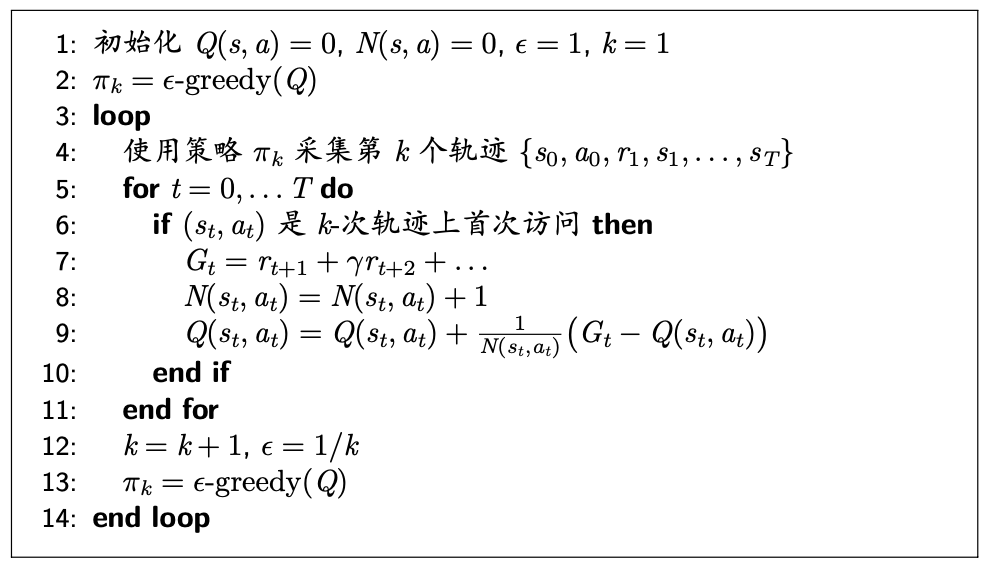
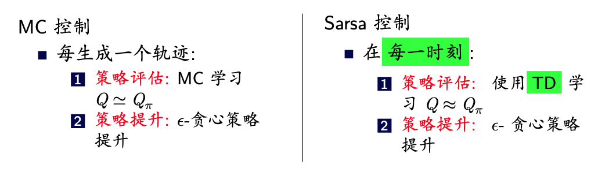
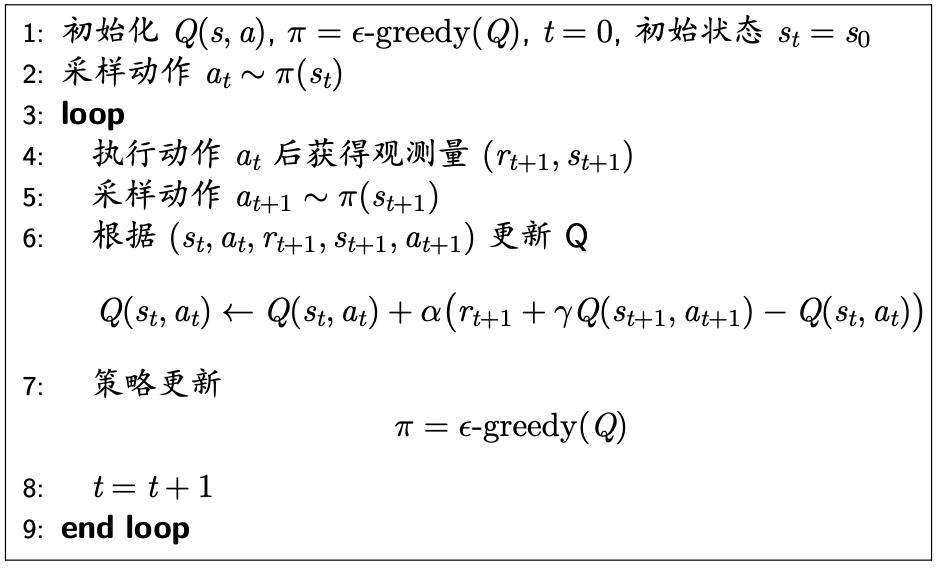
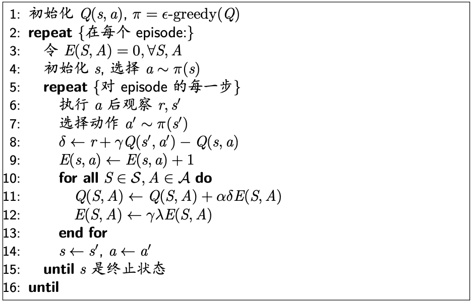
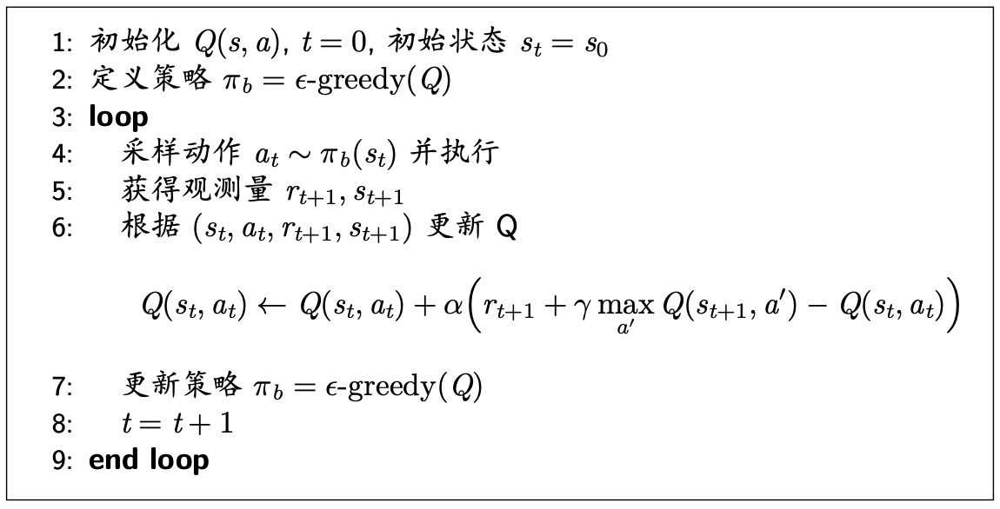
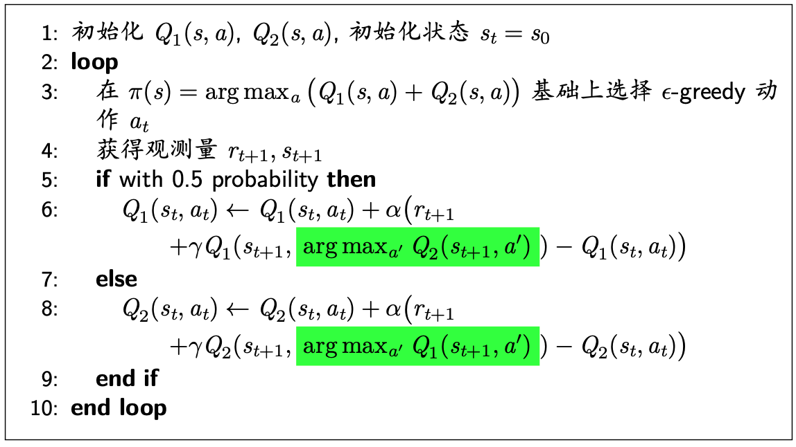
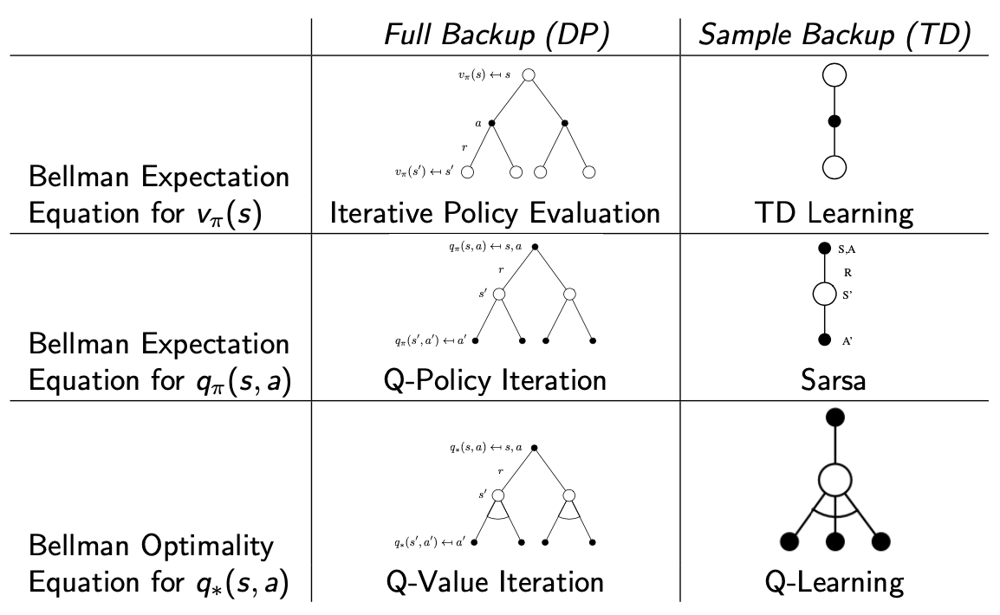
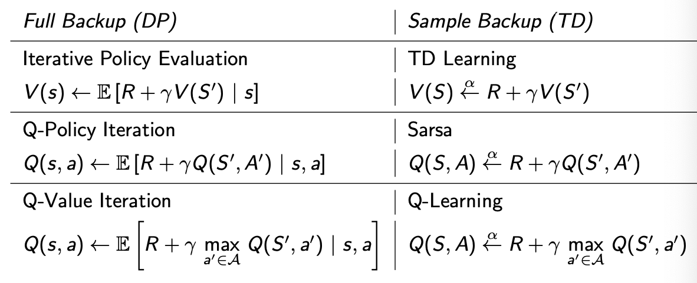

[UCAS强化学习]5·无模型控制
1 简介
上一节课我们介绍了无模型预测，即如何在一个未知的 MDP（不知道转移矩阵 \(\mathcal P\) 和奖励向量 \(\mathcal R\)）中评价一个策略（即计算价值函数）。这节课学习无模型控制，即如何在未知的 MDP 中更新并找到最优策略和最优价值函数。方法包括：
- 蒙特卡洛控制
- Sarsa
- Q-学习
其中，蒙特卡洛控制和 Sarsa 都是在策略 (on-policy) 方法，指优化的策略和用于采样的策略是同一个策略；Q-学习是离策略 (off-policy) 方法，指优化的策略与用于采样的策略有所不同。
2 蒙特卡洛控制
2.1 广义策略迭代
策略迭代回顾：策略迭代反复执行两个步骤
- 策略评估：使用矩阵求解或迭代策略评估求解 \(v_\pi(s)\)
- 策略提升：使用贪心策略更新策略 \(\pi'(s)=\mathop{\text{argmax }}\limits_{a\in\mathcal A}\left(\mathcal R^a_s+\gamma\sum\limits_{s'\in\mathcal S}\mathcal P^a_{ss'}v_\pi(s')\right)\)
该策略迭代算法是 model-based，因为：
- 矩阵求解或迭代策略评估都需要知道模型信息
- 贪心更新需要模型信息
我们现在希望将其变成 model-free 的。第一个问题很容易解决，考虑用上节课介绍的无模型预测方法即可，例如 MC；对于第二个问题，注意贪心策略也可以用 \(q_\pi(s,a)\) 表达： \[ \pi'(s)=\mathop{\text{argmax }}_{a\in\mathcal A} q_\pi(s,a)=\mathop{\text{argmax }}_{a\in\mathcal A}\left(\mathcal R^a_s+\gamma\sum_{s'\in\mathcal S}\mathcal P^a_{ss'}v(s')\right) \] 而基于 \(q_\pi(s,a)\) 的贪心并不需要模型信息，因此只要我们在第一步中去估计动作-价值函数 \(q_\pi\) 而非状态-价值函数 \(v_\pi\) 即可。
至此，原本基于模型的策略迭代算法被我们改成了如下无模型的策略迭代算法：
- 策略评估：使用 MC 估计 \(Q(s,a)\approx q_\pi(s,a)\)
- 策略提升：使用贪心策略更新策略 \(\pi'(s)=\mathop{\text{argmax }}\limits_{a\in\mathcal A}Q(s,a)\)
不过现在出现了一个新的问题。由于我们在第一步中使用了基于采样的无模型预测方法，而采样的分布是上一轮迭代的第二步中寻找到的确定性贪心策略，这将导致采样失去随机性，许多状态-动作对 \((s,a)\) 无法被采样到，进而这些 \(q_\pi(s,a)\) 无法得到估计，导致这一轮迭代的第二步不可能选取到这些动作……最终算法很可能困在局部最优解出不去。换句话说，我们基本没有探索 (exploration) 动作了。
解决方法非常简单，只需要为第二步的贪心策略引入一定的随机性即可，这样的贪心称作 \(\epsilon\text{-greedy}\) 策略。具体而言，我们有 \(1-\epsilon\) 的概率选择贪心策略，剩下 \(\epsilon\) 的概率随机选择策略，即： \[ \pi(a\vert s)=\begin{cases}\epsilon/|\mathcal A|+1-\epsilon&\text{if}\;\;a=\mathop{\text{argmax }}\limits_{a'\in\mathcal A}Q(s,a')\\\epsilon/|\mathcal A|&\text{otherwise}\end{cases} \] 现在，新的策略迭代算法可写作：
- 策略评估：使用 MC 估计 \(Q(s,a)\approx q_\pi(s,a)\)
- 策略提升：使用 \(\epsilon\text{-greedy}\) 策略更新策略
这就是蒙特卡洛控制算法。上述改进过程如图所示：

将贪心策略改成了 \(\epsilon\text{-greedy}\) 策略之后，算法是否还能收敛呢？为此，我们需要证明 \(v_{\pi'}(s)\geq v_\pi(s)\)，同第三节课一样，只需证明 \(q_\pi(s,\pi'(s))\geq v_\pi(s)\) 即可： \[ \begin{align} q_{\pi}(s,\pi'(s))-v_\pi(s) &=\sum_{a\in\mathcal A}\pi'(a\vert s)q_\pi(s,a)-\sum_{a\in\mathcal A}\pi(a\vert s)q_\pi(s,a)\\ &=\epsilon/m\sum_{a\in\mathcal A}q_\pi(s,a)+(1-\epsilon)\max_{a\in\mathcal A}q_\pi(s,a)-\sum_{a\in\mathcal A}\pi(a\vert s)q_\pi(s,a)\\ &=(1-\epsilon)\left[\max_{a\in\mathcal A}q_\pi(s,a)-{\color{purple}{\sum_{a\in\mathcal A}\frac{\pi(a\vert s)-\epsilon/m}{1-\epsilon}q_\pi(s,a)}}\right] \end{align} \] 由于： \[ \sum_{a\in\mathcal A}\frac{\pi(a\vert s)-\epsilon/m}{1-\epsilon}=\frac{1}{1-\epsilon}\sum_{a\in\mathcal A}\pi(a\vert s)-\frac{\epsilon}{1-\epsilon}=\frac{1}{1-\epsilon}-\frac{\epsilon}{1-\epsilon}=1 \] 所以紫色的一坨是对 \(q_\pi(s,a)\) 的加权求和，它一定不大于 \(\max\limits_{a\in\mathcal A}q_\pi(s,a)\)，因此 \(q_\pi(s,\pi'(s))\geq v_\pi(s)\). 证明完毕。
不过，该收敛证明基于假设——策略评估时 MC 的估计是准确的，但这往往需要采样多条轨迹才能做到。为了提高效率，我们自然问一个问题：能否在做 MC 估计的时候，只采样一条轨迹呢？如此不准确的策略评估能否收敛到最优策略呢？

2.2 GLIE
\(\epsilon\text{-greedy}\) 其实还带来了一个问题：我们的最终目标是找到最优策略 \(\pi^\ast\)，它应该是一个确定性策略，可是 \(\epsilon\text{-greedy}\) 给出的策略总是随机的。这种随机性在学习初期是必要的，它保证我们能够去探索；但是在我们已经找到最优策略之后，我们不希望还存在这种随机性。形式化地说，我们希望：
- 所有状态-动作对都能被无限次访问到：\(\lim_{k\to\infty}N_k(s,a)=\infty\)
- 策略最终会收敛到贪心策略：\(\lim_{k\to\infty}\pi_k(a\vert s)=\mathbf 1(a=\mathop{\text{argmax }}_{a'\in\mathcal A}Q_k(s,a'))\)
这样的策略称为 GLIE (Greedy in the Limit with Infinite Exploration).
一个自然简单的想法是，随着学习的进行，逐步减小 \(\epsilon\)，使得 \(\lim_{k\to\infty}\epsilon_k=0\). 譬如，可以取 \(\epsilon_k=1/k\)，这样就能满足 GLIE 条件。这样我们就得到了 GLIE MC 算法，其流程如下：

可以证明，GLIE MC 能够收敛到最优的动作-价值函数，即 \(q(s,a)\to q_\ast(s,a),\,\forall s\in\mathcal S,a\in\mathcal A\).
3 Sarsa
上一节中我们始终采用 MC 进行策略评估。鉴于 TD 对 MC 的优势，自然可以想到将 MC 替换为 TD，这样就引出了 Sarsa 算法。也就是说，如果上一节的算法称作蒙特卡洛控制 (MC control)，那么 Sarsa 其实就是时间差分控制 (TD control).

3.1 Sarsa
使用 TD 作为策略评估方法代入策略迭代算法，得到 Sarsa 算法：

由于第 6 行算法的更新依赖于 \((s_t,a_t,r_{t+1},s_{t+1},a_{t+1})\)，因此称之为 Sarsa.
Sarsa 的收敛性由以下定理保证：若以下条件得到满足：
- 策略序列 \(\pi_t(a\vert s)\) 满足 GLIE
- 更新步长 \(\alpha_t\) 序列满足 Robbins-Monro 要求：\(\sum_{t=1}^\infty a_t=\infty\quad\sum_{t=1}^\infty a_t^2<\infty\)
则 Sarsa 能收敛到最优的动作-价值函数，即 \(q(s,a)\to q_\ast(s,a),\,\forall s\in\mathcal S,a\in\mathcal A\).
但是实践中我们一般不会考虑第 2 个条件，甚至有时都不考虑第 1 个条件，Sarsa 依然能 work.
3.2 n-step Sarsa
可以看出，上述 Sarsa 算法对应着使用 TD(0) 进行策略评估，于是我们自然可以得到 n-step Sarsa 和 Sarsa(λ).
首先将 Sarsa 扩展到 n-step Sarsa：

定义 n-step Q-回报： \[ Q^{(n)}_t=R_{t+1}+\gamma R_{t+2}+\cdots+\gamma^{n-1}R_{t+n}+\gamma ^n Q(s_{t+n},a_{t+n}) \] 那么 n-step Sarsa 的更新就是： \[ Q(s_t,a_t)\gets Q(S,A)+\alpha(Q_t^{(n)}-Q(S,A)) \]
3.3 Sarsa(λ)
对 n-step Sarsa 做几何级数的加权求和，即是 Sarsa(λ). 与 TD(λ) 类似，我们有前向 Sarsa(λ) 和后向 Sarsa(λ).

前向 Sarsa(λ) 需要先把各 \(Q_t^{(n)}\) 求出来，再以指数加权得到 λ-Q-回报：
\[ \begin{align} &Q_t^\lambda=(1-\lambda)\sum_{n=1}^\infty\lambda^{n-1}Q_t^{(n)}\\ &Q(s_t,a_t)\gets Q(s_t,a_t)+\alpha(Q_t^\lambda-Q(s_t,a_t)) \end{align} \] 后向 Sarsa(λ) 则使用资格迹实现在线学习，不过此时我们需要对每一个状态-动作对都存储一个资格迹 \(E_t(s,a)\)： \[ \begin{align} &E_0(s,a)=0\\ &E_t(s,a)=\gamma\lambda E_{t-1}(s,a)+\mathbf 1(S_t=s,A_t=a) \end{align} \] 更新方式为： \[ \begin{align} &\delta_t=r_{t+1}+\gamma Q(s_{t+1},a_{t+1})-Q(s_t,a_t)\\ &Q(s,a)\gets Q(s,a)+\alpha\delta_t E_t(s,a) \end{align} \] 算法流程如图所示：

4 Q-学习
4.1 在策略和离策略
上文中，无论是蒙特卡洛控制还是 Sarsa，它们在策略提升中要优化的策略与策略评估时用于采样的策略（称作行为策略）是相同的，即根据策略 \(\pi\) 产生的样本来学习关于 \(\pi\) 的相关知识，这被称作在策略 (on-policy) 学习。与之对应的，如果根据另一个策略 \(\mu\) 产生的样本来学习关于 \(\pi\) 的相关知识，则被称作离策略 (off-policy) 学习。为什么需要离策略学习呢？
- 有时智能体需要观察人类或别的智能体的行为去学习
- 有时需要重复利用旧策略 \(\pi_1,\pi_2,\ldots,\pi_{t−1}\) 产生的经验去学习
- 执行探索性的策略去学习最优策略
- 执行单一的策略去学习多个策略
为了实现离策略学习，首先介绍一种采样方法——重要性采样。
4.2 重要性采样
重要性采样 (importance sampling) 通过将对分布 \(p\) 求期望变换为对分布 \(q\) 求期望，从而将对分布 \(p\) 的采样转换为对分布 \(q\) 的采样： \[ \begin{align} \mathbb E_{p}[f(x)]&=\int f(x)p(x)\mathrm dx=\int f(x)\frac{p(x)}{q(x)}q(x)\mathrm dx\\ &=\mathbb E_{q}\left[\frac{p(x)}{q(x)}f(x)\right]\approx\frac{1}{N}\sum_{n=1}^N\frac{p(x^{(n)})}{q(x^{(n)})}f(x^{(n)}),\quad x^{(n)}\sim q(x) \end{align} \] 称 \(w^{(n)}=p(x^{(n)})/q(x^{(n)})\) 为重要性权重。
基于重要性采样，在离策略学习中，假设智能体在策略 \(\mu\) 下产生一条轨迹：
\[ \tau=\{s_t,a_t,s_{t+1},a_{t+1},\ldots,s_T\mid a_{t:T-1}\sim \mu\} \] 获得相应回报为： \[ G_t=r_{t+1}+\gamma r_{t+1}+\cdots \] 由于轨迹 \(\tau\) 在策略 \(\mu\) 下出现的概率为： \[ p(\tau\vert\mu)=\mu(a_t\vert s_t)p(s_{t+1}\vert s_t,a_t)\mu(a_{t+1}\vert s_{t+1})\cdots p(s_T\vert s_{T-1},a_{T-1}) \] 而在策略 \(\pi\) 下同一条轨迹出现的概率为： \[ p(\tau\vert\pi)=\pi(a_t\vert s_t)p(s_{t+1}\vert s_t,a_t)\pi(a_{t+1}\vert s_{t+1})\cdots p(s_T\vert s_{T-1},a_{T-1}) \] 因此基于重要性采样，在策略 \(\pi\) 下的回报应该乘上重要性权重 \(p(\tau\vert\pi)/p(\tau\vert\mu)\)： \[ G_t^{\pi/\mu}=\frac{p(\tau\vert\pi)}{p(\tau\vert\mu)}G_t=\prod_{k=t}^{T-1}\frac{\pi(a_k\vert s_k)}{\mu(a_k\vert s_k)}G_t=\rho_tG_t \] 其中 \(\rho_t=\displaystyle\prod_{k=t}^{T-1}\frac{\pi(a_k\vert s_k)}{\mu(a_k\vert s_k)}\) 称作重要性采样比率 (importance sampling ratio)。
离策略 MC 学习：现在，基于行为策略 \(\mu\) 的数据，对策略 \(\pi\) 的 MC 学习（即使用 MC 做策略评估）变成了： \[ V(s_t)\gets V(s_t)+\alpha\left({\color{purple}{G_t^{\pi/\mu}}}-V(s_t)\right)=V(s_t)+\alpha\left({\color{purple}{\rho_tG_t}}-V(s_t)\right) \] 然而，这个方法并不实用，因为：
- 它要求对 \(p(a\vert s)>0\) 的动作-状态对，有 \(\mu(a\vert s)>0\)
- \(\rho_t\) 中的多项连乘将导致极大的方差，使得算法极其不稳定
离策略 TD 学习：相比离策略 MC 学习，更实用的是离策略 TD 学习。只需在 TD(0) 的基础上，对 TD 目标乘上重要性权重： \[ V(s_t)\gets V(s_t)+\alpha\left({\color{purple}{\frac{\pi(a_t\vert s_t)}{\mu(a_t\vert s_t)}\left(r_{t+1}+\gamma V(s_{t+1})\right)}}-V(s_t)\right) \] TD 预测比 MC 预测的方差要小很多，而且是在线学习。
说了这么多，离策略学习到底有什么用呢？回忆上文中我们提到，当行为策略和优化策略都是贪心策略时，算法无法探索足够多的状态-动作对，导致难以找到最优解；但当行为策略和优化策略都是 \(\epsilon\text{-greedy}\) 策略时，最终找到的策略一定是随机策略，而非最优的确定性策略。前面我们用 GLIE 暂时解决了这个问题，但是现在，基于离策略学习的思想，我们有一个更好的解决方案——只需要以 \(\epsilon\text{-greedy}\) 作为行为策略，去优化贪心策略即可。
4.3 Q-学习
以 \(\epsilon\text{-greedy}\) 作为行为策略 \(\mu\)，以贪心策略 \(\pi\) 作为要优化的策略，考虑将 Sarsa 改造为离策略版本。设当前状态为 \(s_t\)，则：
- 采样动作 \(a_t\sim\mu(\cdot\vert s_t)\)，获得奖励 \(r_{t+1}\)，转移到状态 \(s_{t+1}\)，采样动作 \(a_{t+1}\sim\mu(\cdot\vert s_{t+1})\)
- 更新 \(Q\) 时使用重要性采样：\(Q(s_t,a_t)\gets Q(s_t,a_t)+\alpha\left(r_{t+1}+{\color{green}\gamma\dfrac{\pi(a_{t+1}\vert s_{t+1})}{\mu(a_{t+1}\vert s_{t+1})}Q(s_{t+1},a_{t+1})}-Q(s_t,a_t)\right)\)
- 策略提升：\(\mu'(s)=\epsilon\text{-greedy}(Q),\,\pi'(s)=\text{greedy}(Q)\)
就得到离策略的 Sarsa 算法。
然而，其实我们根本没有必要采样动作 \(a_{t+1}\)，这是因为 \(\pi\) 是确定性的贪心策略，所以绿色部分只对 \(a^\ast=\mathop{\text{argmax }}\limits_{a'\in\mathcal A} Q(s_{t+1},a')\) 非零，对其他动作都是零。而对于 \(a^\ast\)，有： \[ \gamma\frac{\pi(a^\ast\vert s_{t+1})}{\mu(a^\ast\vert s_{t+1})}Q(s_{t+1},a^\ast)=\frac{\gamma}{\epsilon/|\mathcal A|+1-\epsilon}\cdot\max\limits_{a'\in\mathcal A}Q(s_{t+1},a') \] 把前面的系数作为一个整体视作新的 \(\gamma\)，得到对 \(Q\) 的更新公式： \[ Q(s_t,a_t)\gets Q(s_t,a_t)+\alpha\left({\color{purple}{r_{t+1}+\gamma \max_{a'\in\mathcal A}Q(s_{t+1},a')}}-Q(s_t,a_t)\right) \] 这就是 Q-学习算法。算法流程如图所示：

4.4 Q-学习与价值迭代
回顾这一路推导，我们其实都是围绕策略迭代不断地改进，但是最终得到的 Q-学习却与针对动作-价值函数的价值迭代很类似： \[ \begin{align} &q_{k+1}(s,a)=\mathcal R_s^a+\gamma\sum_{s'\in\mathcal S}\mathcal P_{ss'}^a \max_{a'\in\mathcal A} q_k(s',a')\approx r_{t+1}+\gamma\max_{a'\in\mathcal A} q_k(s_{t+1},a')&&\text{Value Iteration}\\ &Q(s_t,a_t)\gets Q(s_t,a_t)+\alpha\left(r_{t+1}+\gamma \max_{a'\in\mathcal A}Q(s_{t+1},a')-Q(s_t,a_t)\right) \end{align} \] 因此也有人认为 Q-学习是价值迭代的在线形式。
4.5 Double Q 学习
Q-学习常常会遇到过高估计的问题。考虑这样的 MDP：1 个状态，2 个动作，每个动作获得期望奖励为 0，那么显然有： \[ Q(s,a_1)=Q(s,a_2)=0=V(s) \] 但在实际运行时，假设有一系列执行动作 \(a_1\) 和 \(a_2\) 的样本，基于这些有限的样本计算 \(\hat Q(s,a_1),\hat Q(s,a_2)\) 作为 \(Q\) 的估计，例如： \[ \hat Q(s,a_1)=\frac{1}{n(s,a_1)}\sum_{i=0}^{n(s,a_1)}r_i(s,a_1) \] 然后基于估计的 \(\hat Q\) 定义贪心策略 \(\hat\pi=\arg\max_a \hat Q(s,a)\). 我们发现，尽管 \(\hat Q(s,a)\) 是无偏估计，但以此得到的策略 \(\hat\pi\) 对应的 \(\hat V^{\hat\pi}\) 却是有偏的： \[ \hat V^{\hat\pi}=\mathbb E\left[\max\left(\hat Q(s,a_1),\hat Q(s,a_2)\right)\right]\geq\max\left(\mathbb E[\hat Q(s,a_1)],\mathbb E[\hat Q(s,a_2)]\right)=\max(0,0)=0=V^\ast \] 也就是说 Q-学习会过高地估计价值函数。
为了解决这个问题，Double Q 学习将样本分为两组，分别定义两个独立的估计 \(\hat Q_1(s,a_i),\hat Q_2(s,a_i)\)：
- 使用一个 \(Q\) 函数计算贪心动作：\(a^\ast=\arg\max_a\hat Q_1(s,a)\)
- 使用另一个 \(Q\) 函数估计 \(a^\ast\) 的价值：\(\hat Q_2(s,a^\ast)\)
- 获得无偏估计：\(\hat V(s)=\mathbb E\left[\hat Q_2(s,a^\ast)\right]=Q(s,a^\ast)\)
仍然考虑上面的例子，假设第 1 步中选择 \(a^\ast=a_1\) 的概率是 \(p(a_1)\)，相应选择 \(a^\ast=a_2\) 的概率是 \(p(a_2)=1-p(a_1)\)，那么： \[ \begin{align} \hat V(s)&=\mathbb E\left[\hat Q_2(s,a^\ast)\right]=\mathbb E\left[p(a_1)\hat Q_2(s,a_1)+p(a_2)\hat Q_2(s,a_2)\right]\\ &=p(a_1)\mathbb E\left[\hat Q_2(s,a_1)\right]+p(a_2)\mathbb E\left[\hat Q_2(s,a_2)\right]\\ &=p(a_1)Q(s,a_1)+p(a_2)Q(s,a_2)=0=V^\ast \end{align} \] 我们发现此时价值函数的估计确实是无偏的。
Double Q 学习的算法流程如下所示：

5 小结
通过这几节课的学习，我们已经发现许多算法之间具有对应和发展的关系，这里，我们将 DP 和 TD 的算法总结如下表：


其中，\(x\overset{\alpha}{\gets}y\equiv x\gets x+\alpha(y-x)\)，表示用 \(y\) 来更新 \(x\).